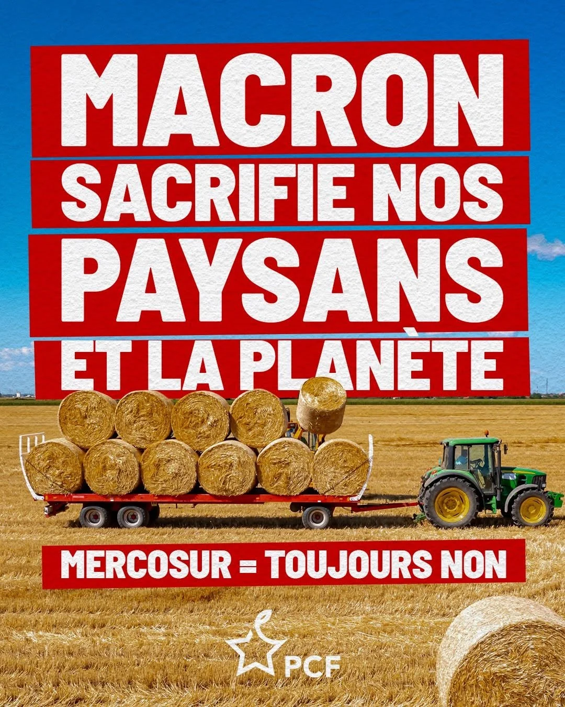

Publication relayée par le PCF 79
Le PCF réaffirme son opposition à l’accord avec le Mercosur
Date de mise à jour indiquée par Facebook · 7 novembre 2025
Texte de la publication · PCF national
Emmanuel Macron avait promis de s’opposer à l’accord de libre-échange entre l’Union européenne et le Mercosur.
Aujourd’hui, il laisse la porte ouverte à sa ratification — au mépris de nos paysans, de notre souveraineté alimentaire et du climat.
Cet accord, c’est plus de déforestation, plus de viande importée à bas coût, plus de dumping social et environnemental.
Le PCF refuse cette logique de libre-échange qui sacrifie les travailleurs, les producteurs et la planète au profit des multinationales.
Le gouvernement doit soumettre cet accord au vote du Parlement français.
Mercosur = toujours non.

Sources
PCF national · publication relayée par le PCF 79 · bibliothèque Facebook · AR-0002-FB-00962
À lire aussi · À Cerizay, le rassemblement de la Confédération paysanne en vidéo · Le lien vidéo